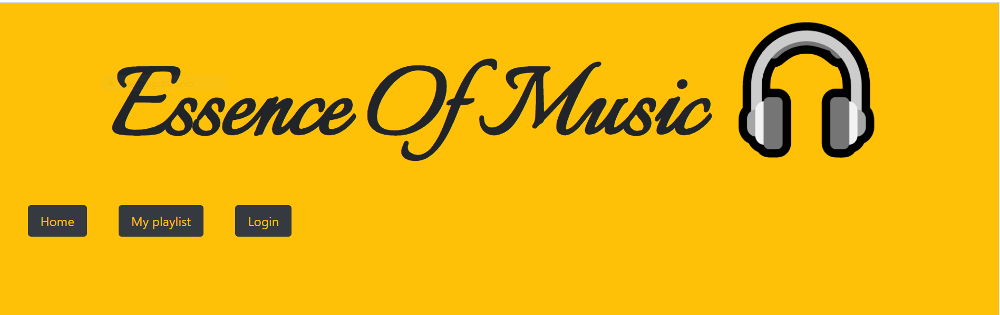
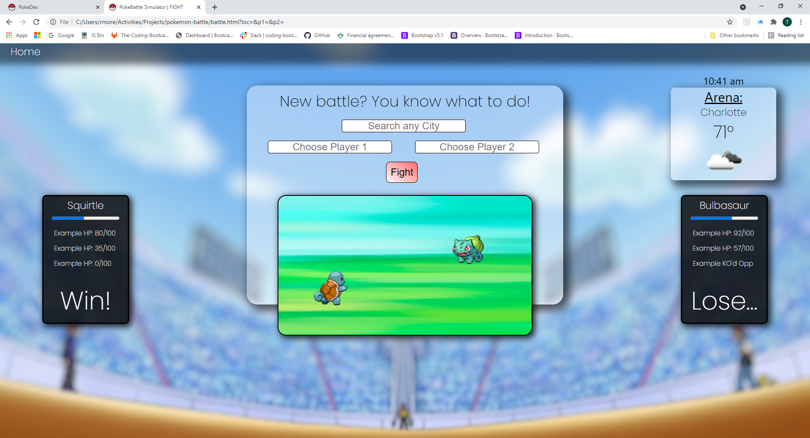

A Little About Me
Enthusiastic and self-driven personality
dedicated to assisting executive and
creative teams by performing
administrative and client support duties
associated with maintaining client
satisfaction while benefiting all parties.
Focused on ensuring excellent service and
maintaining high customer satisfaction.
Experienced in providing product and
service knowledge and resolving any
emerging problems clients may face with
accuracy and efficiency.

Essence of Music is a responsive and interactive application designed to fill the needs of our Users. We focused on the Users experience, therefore Essence of Music (EOM) includes the following:
Sign-In capabilities for the users safety of personal information.
Mobile phone adjustments, for the user on the go!
A Lyric driven API installation allowing the user to read along, learn the song, and maybe even enjoy some Karaoke.
Timed logout cookie, for user information protection.

Built with a team, we have created an app where the user will be able to battle the selected Pokemon based off the current location of the user. The
Pokemon powers and attacks will be influenced by the weather that is occuring in the users current
area.
The battle continues without the users input, however the user will be able to see the health status
of both Pokemon to stay interactive with the battle.

Over the little time that I have atteneded the UNCC Full-Stack Coding Bootcamp, I have created several Repositories. These repositories vary from HTML/CSS style, to more indepth frontend and backend JavaScript. This link above will allow you to view some active projects I have created, whether alone, or with a team. Please feel free to checkout what I am currently working on.